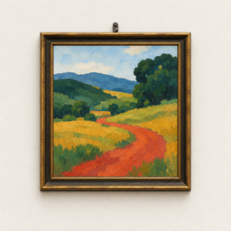
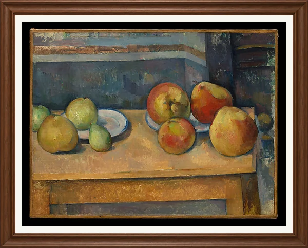
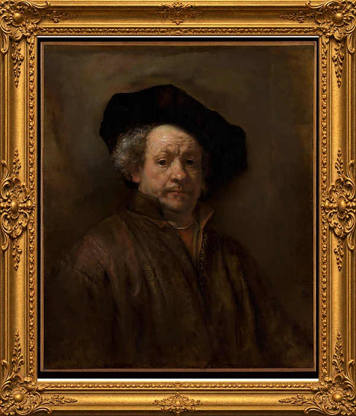
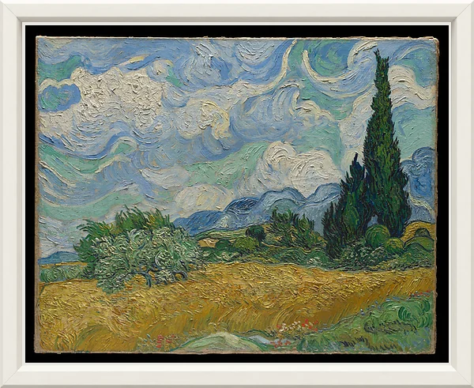
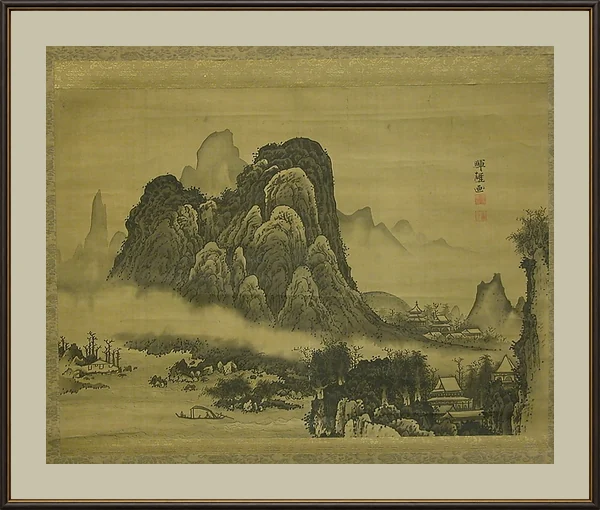
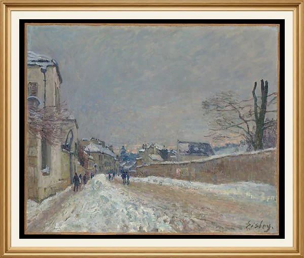

不需要账号
打开即可使用，不注册、不登录，也没有社交与排行榜。

专注艺术馆没有进度圈、得分和提醒弹窗。屏幕上只有一幅画、一块编号牌，以及一个不跳动的倒计时。
左右滑动，在六个展厅之间挑选。每个展厅陈列八幅画，画框各不相同。
15、25 或 45 分钟。期间可以点编号牌读作品介绍，计时不受影响。
完成后这幅画被收藏进本厅，下一幅会挂到它右边。集齐八幅，获得一枚纪念章。

01:00
在网页里体验一次专注规则。
每个展厅有固定的画框与装裱。画作均为大都会艺术博物馆开放获取的公共领域藏品，逐件核实来源后收录。




打开即可使用，不注册、不登录，也没有社交与排行榜。
专注记录与收藏保存在 iPhone 上，没有云同步、广告或行为追踪。
锁屏或切走会暂停；30 秒内回来继续，超过则本次中断，画作保留，可从头再来。
每幅画只收藏一次。集齐后仍可重温，只增加专注记录。
图片下载完成才能开始专注。已缓存的画作和收藏可离线观看，专注中断网不受影响。
开始与完成时墙面和灯光都不变化，没有闪光、粒子或进度条。
免费版已经是完整的体验。Pro 多开放两个展厅、更多专注时长和收藏海报导出。
永久免费
显示价格为人民币参考价，实际以 App Store 为准。月度与年度订阅自动续期，可随时在 App Store 账户设置中取消；终身为一次性购买。到期后保留已有收藏，可继续浏览。
可以短暂离开。进入后台或锁屏后计时暂停，后台时间不计入专注；30 秒内回来自动继续，超过 30 秒本次记为中断。系统弹窗不会打断计时。
点 EXIT 会先询问是否结束。结束后本次不收藏，但这幅画仍挂在原处，下次可以对同一幅重新开始完整专注。
收藏只保存在本机，删除 App 会一并删除。Pro 权益可通过「恢复购买」找回，收藏和专注记录无法恢复。
首次观看一幅画需要下载图片。已缓存的画作与收藏可离线使用，专注开始后断网不影响完成。
画作图片来自大都会艺术博物馆的开放获取计划，属于公共领域。中文译名为应用译名，作品详情中保留原文名称、出处与署名。
在 iPhone「设置」→ 你的 Apple 账户 →「订阅」中取消，或在 App 的设置页中管理订阅。删除 App 不会自动取消订阅。